Luxury in a bedroom often comes down to a small handful of specific objects, chosen deliberately, rather than a general mood.
These 18 ideas are the concrete pieces, the actual headboard, the actual chandelier, the actual accent chair, that signal an upscale look in a way abstract design principles alone just can't.

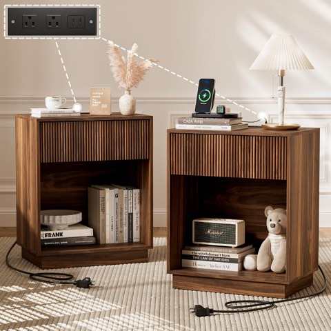
Fluted Nightstands, Set of 2, with Charging Station, Drawer and Open Shelf, Mid-Century Wood
Shop on Amazon1. Personalize With a Signature Piece
One meaningful object, art, a family piece, something collected rather than purchased for the room, keeps the space from reading as a generic luxury showroom.
This final layer is what makes the room feel like it belongs to someone specific.
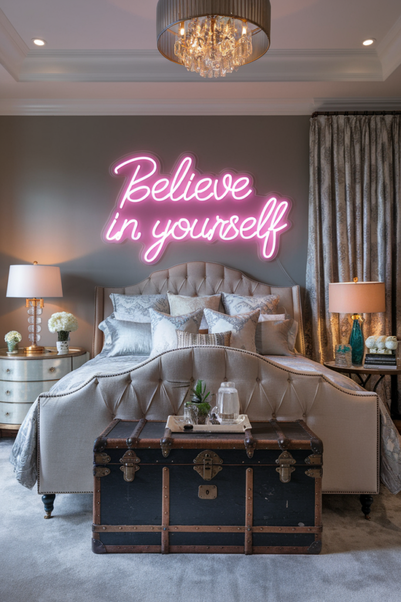
Gold Abstract Meditating Woman Statue, Figurine Sculpture
Shop on Amazon2. Add a Tray for That Hotel Touch
A simple tray on the dresser or nightstand, holding a few considered objects, instantly reads as more intentional than loose items scattered across the surface.
This small styling trick is borrowed directly from hotel design, where surfaces are rarely left unstyled.
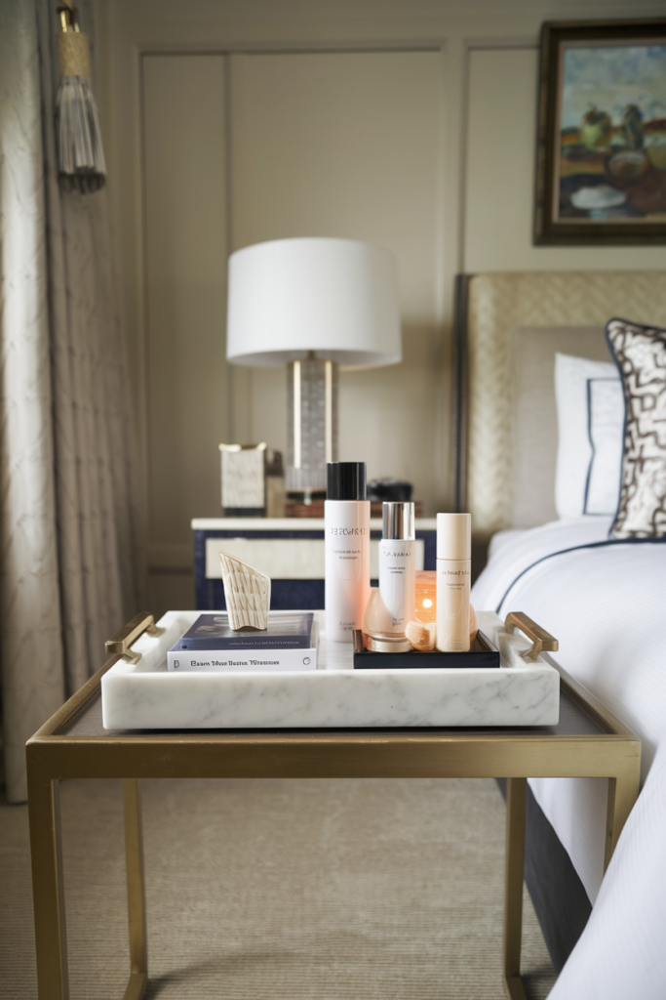

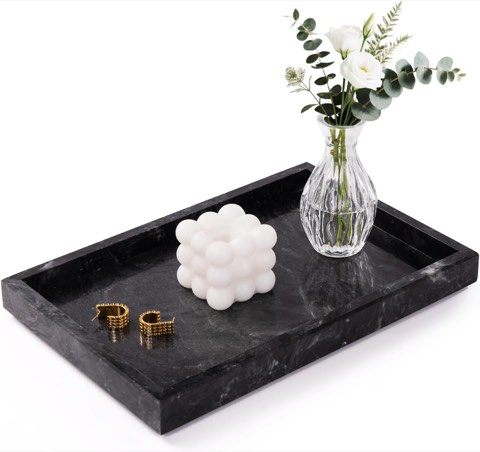
Natural Black Marble Tray for Countertop and Home Decor, Jewelry and Perfume
Shop on Amazon3. Create a Scented Oasis
A quality candle or diffuser adds a sensory layer that's easy to forget when focused purely on what's visible in the room.
This is one of the lowest-cost items on this list relative to the impact it has on how the room actually feels.
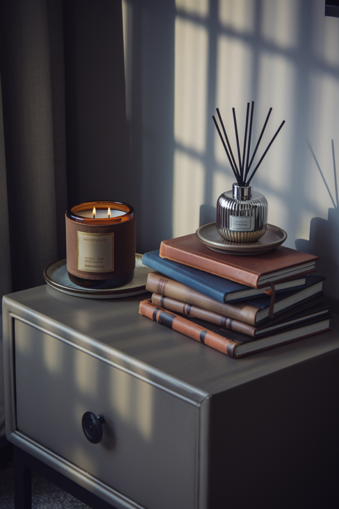
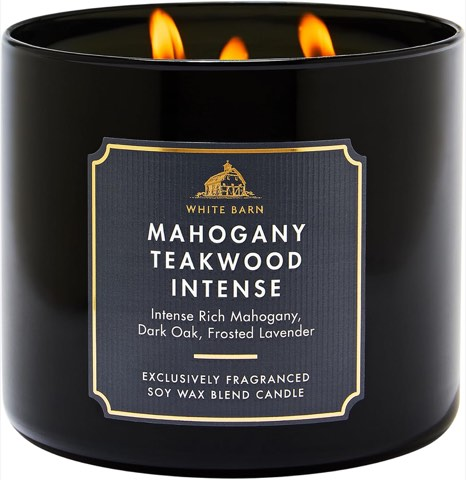
Bath and Body Works 3-Wick Candle, Mahogany Teakwood Intense, Soy Wax Blend
Shop on Amazon4. Light the Room Properly
Layered lighting beyond just the chandelier, bedside lamps, a dimmer, rounds out the room's mood options for different times of day.
A warm-toned bulb throughout matters more here than the fixture choice itself.
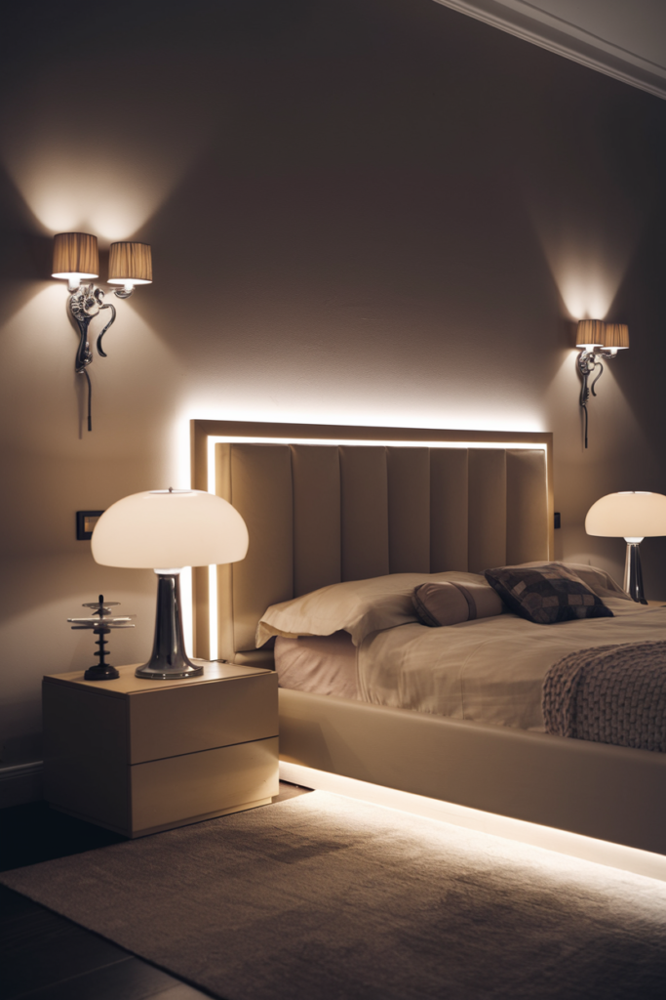
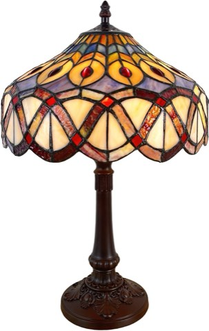
Tiffany-Style Stained Glass Table Lamp, Vintage Art Peacock Tail Pattern
Shop on Amazon5. Pop In Some Greenery
A single well-placed plant brings life into a room that could otherwise feel too polished or static.
One confident plant works better here than several scattered smaller ones.
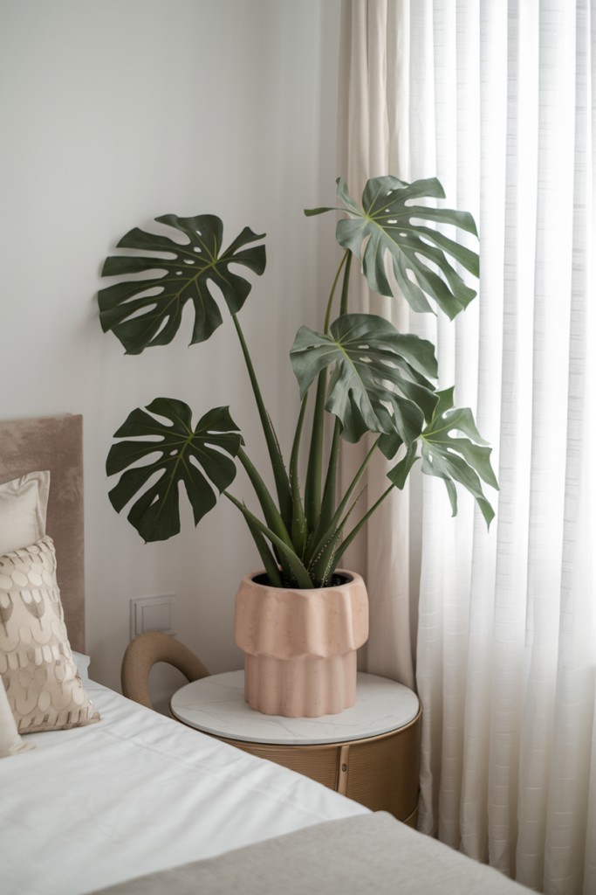
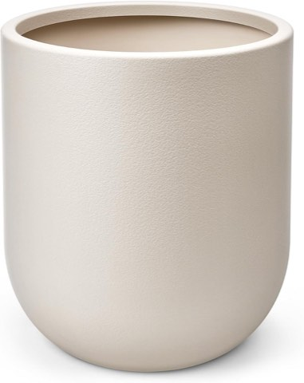
homenote 13 Inch Large Plastic Planter with Drainage for Houseplants, Cream
Shop on Amazon6. Add a Plush Area Rug
A thick, genuinely soft rug underfoot adds a sensory layer of luxury that's easy to underestimate until it's actually there.
Sizing it properly, large enough for the bed and nightstands to sit at least partially on it, matters more than most people expect.
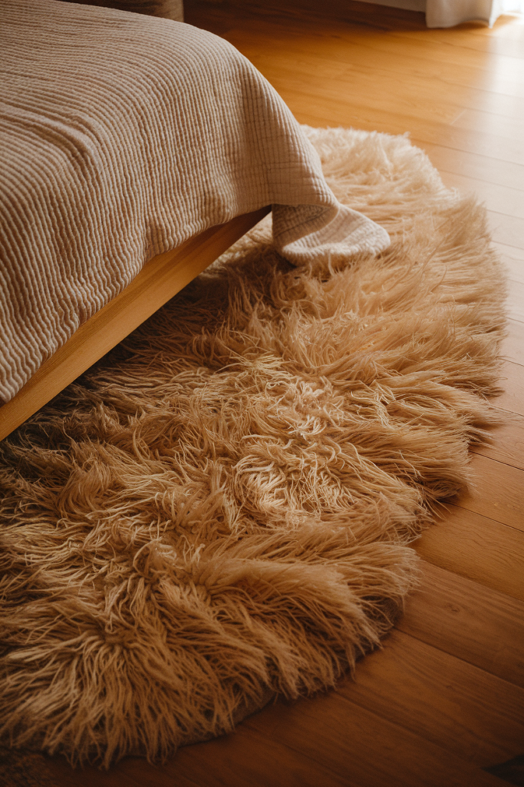
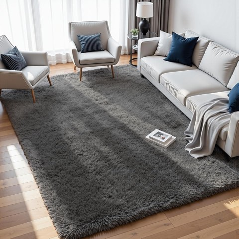
8 x 10 Fluffy Shag Area Rug for Living Room and Bedroom, Soft Plush, Grey
Shop on Amazon7. Splurge on High-End Bedding
Genuinely high-thread-count sheets and a well-made duvet do more for the room's tactile luxury than almost anything visible.
This is worth prioritizing in the budget over more decorative items, since it's the one thing touched every single night.
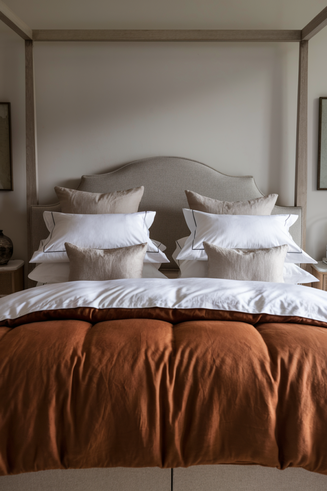
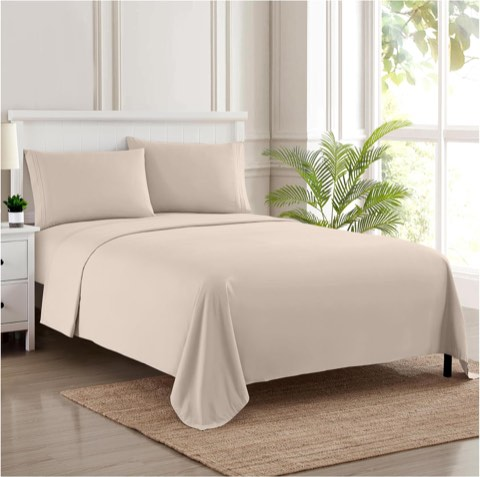
1800 Thread Count Sheet Set, Soft Egyptian Quality Brushed Microfiber Bedding
Shop on Amazon8. Swap Knobs for Glam Hardware
Replacing basic dresser or nightstand knobs with a more considered finish is one of the cheapest, fastest upgrades on this entire list.
This small detail gets noticed more than its low cost would suggest.
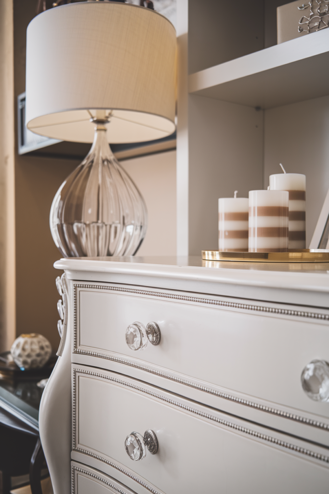
9. Add a Few Metallic Accents
Brass, gold, or warm bronze details, hardware, a lamp base, a picture frame, catch light in a way that instantly reads as more elevated.
A little goes a long way here; a few well-placed accents outperform metallic surfaces everywhere.
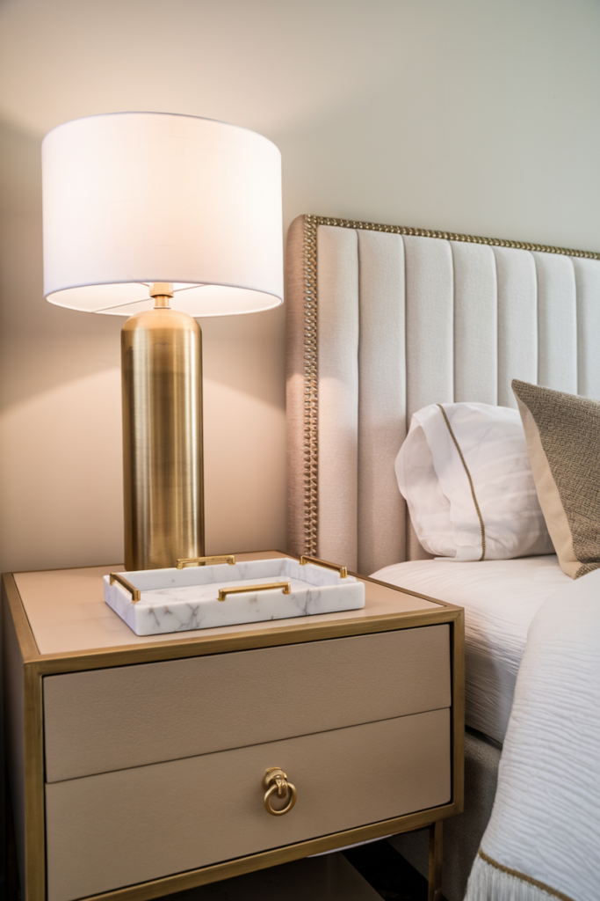
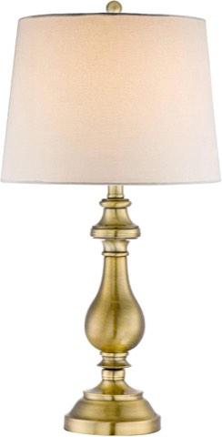
Fairlee 26 Inch Tall Table Lamp, Gold Brass Candlestick, Antique Traditional
Shop on Amazonupsimples 11x14 Picture Frame, Gold, Matted to 8x10
Shop on Amazon10. Embrace Dark, Moody Walls
A deep charcoal, navy, or forest green wall color brings genuine drama that a safe neutral never will.
This pairs especially well with the metallic and velvet elements elsewhere on this list, which catch light more noticeably against a dark backdrop.
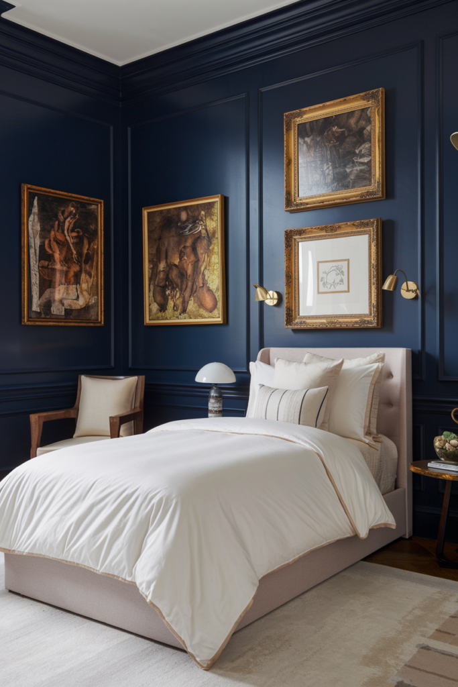
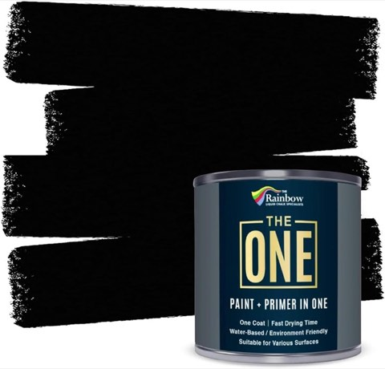
THE ONE All-in-One Paint and Primer, Black Matte, 1 Liter, 1 Coat Formula
Shop on Amazon
11. Curate a Gallery Wall
A considered collection of art, rather than a single piece, adds real personality above the bed or on an adjacent wall.
A consistent frame style across the collection keeps the gallery reading as curated rather than random.
12. Play With Symmetry
Matching nightstands, matching lamps, and a centered headboard create the kind of calm, intentional balance associated with high-end hotel rooms.
This is one of the lowest-cost ideas on this entire list, it's a matter of arrangement, not new purchases.
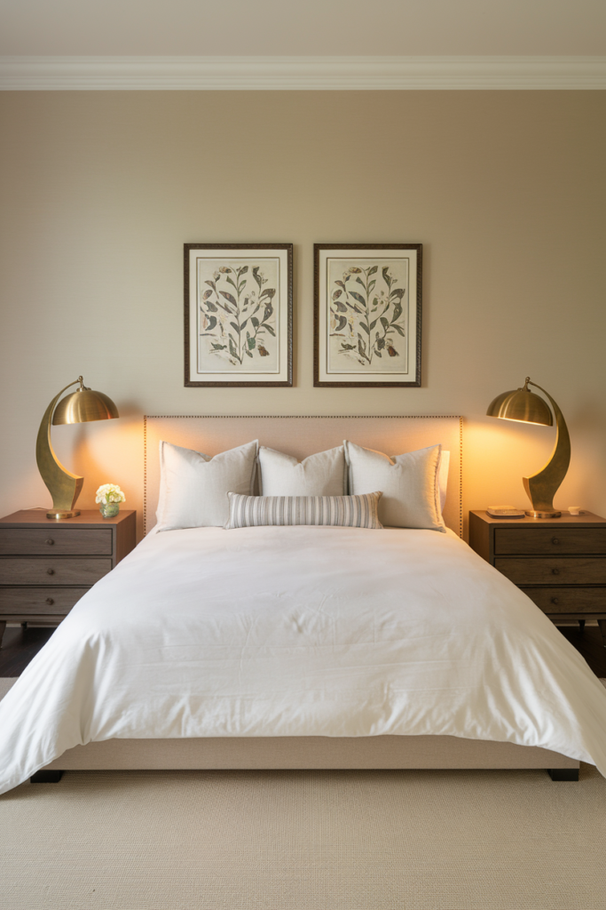
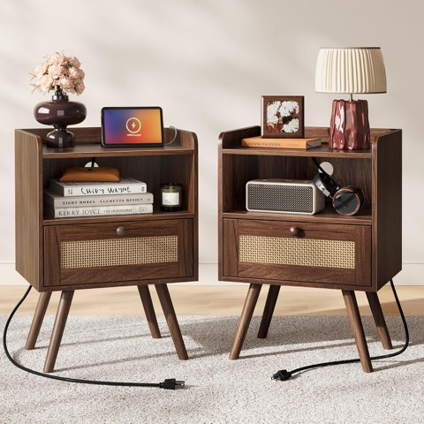
SUPERJARE Nightstands, Set of 2, with Charging Station and Rattan Drawer
Shop on Amazon13. Hang a Statement Mirror
An oversized or uniquely shaped mirror adds both function and a genuine design moment, while also bouncing light back into the room.
Placement near a window maximizes the light-reflecting benefit alongside the style payoff.
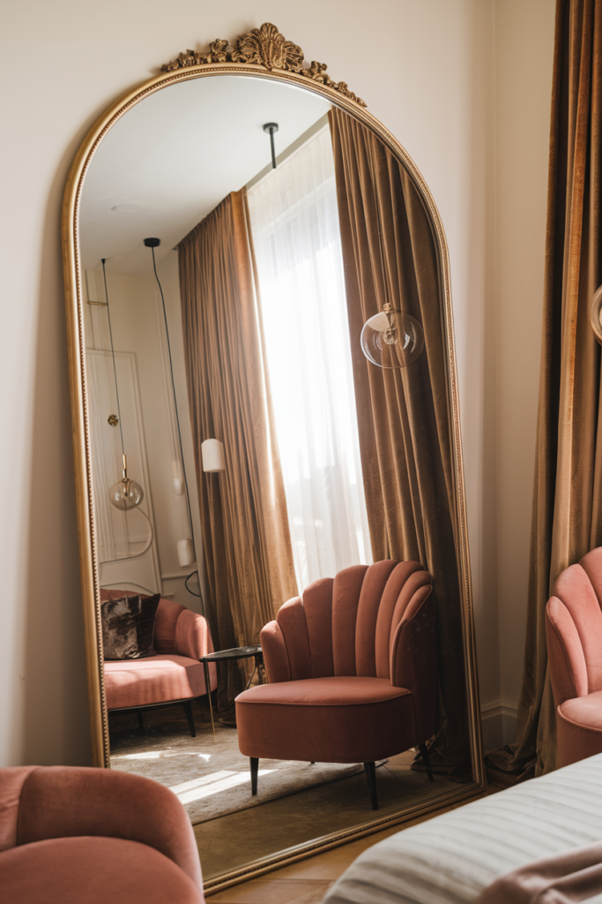
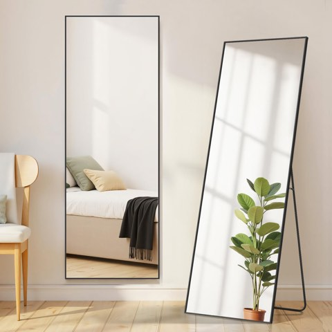
Full Length Mirror, 16 x 59 Inch, Floor Standing Body Mirror, Shatter-Proof Glass
Shop on Amazon
14. Install Floor-to-Ceiling Curtains
Curtains hung from ceiling height rather than just above the window frame make the entire room feel taller and more grand, regardless of the actual ceiling height.
This is one of the simplest tricks on this list with an outsized visual payoff.
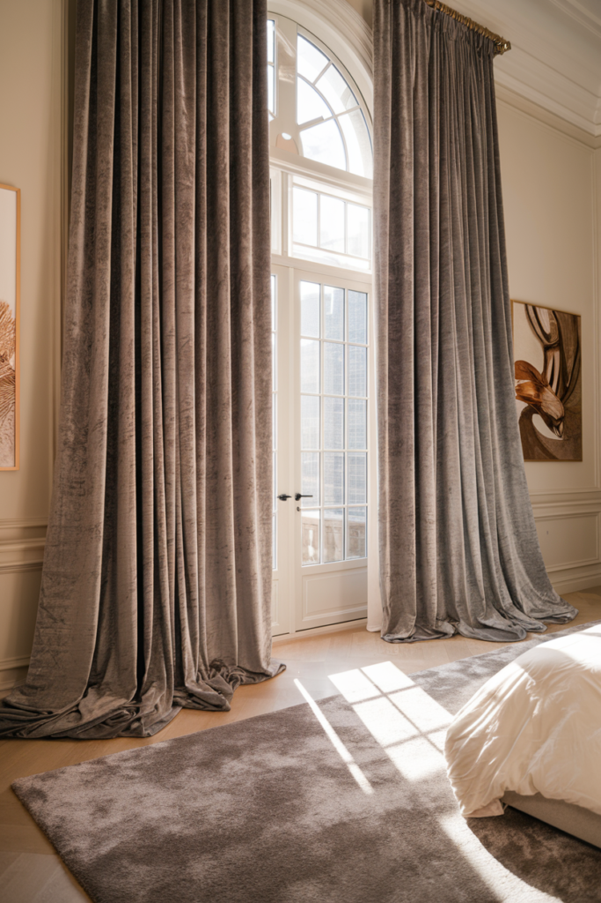
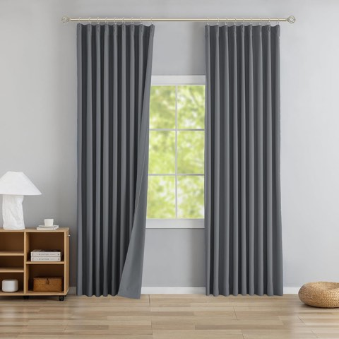
DONREN Neutral Gray Pinch Pleated Blackout Curtains with Hooks, 120 Inch
Shop on Amazon15. Bring in a Velvet Accent Chair
A single velvet chair in a reading corner adds both function and a genuine texture moment that the rest of the room's materials can play off of.
This works especially well as the one piece in the room allowed to be a slightly bolder color.
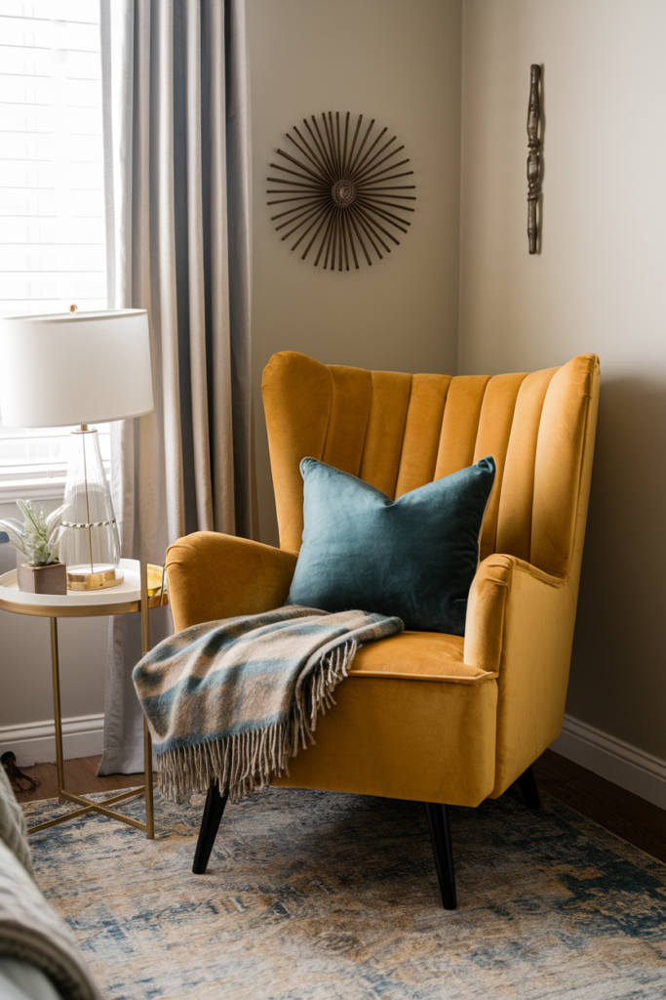
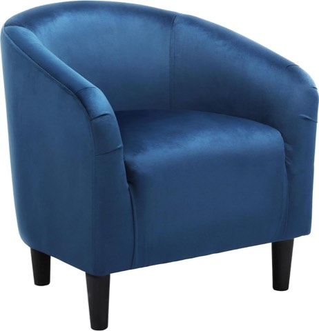
Yaheetech Small Velvet Barrel Accent Chair, 25.5 Inch Wide, Pagoda Blue
Shop on Amazon16. Layer Up the Textiles
A duvet, a folded throw, several pillow textures, genuine layering on the bed itself does more for a luxury feel than any single fabric choice.
Mixing textures specifically, not just colors, is what makes the layering read as intentional rather than just more blankets.
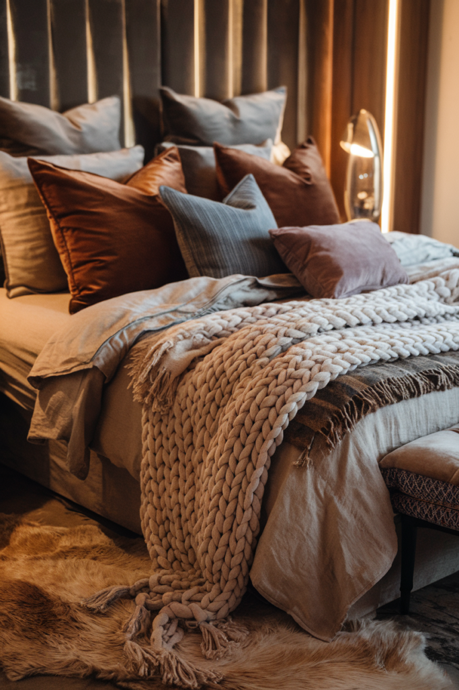
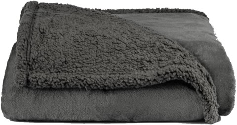
Layered Blankets The Accent, Double-Sided Luxury Throw Blanket, Machine Washable
Shop on Amazon17. Add a Chandelier
A chandelier in the bedroom reads as a genuine surprise in a way the same fixture wouldn't in a dining room, which is exactly why it makes such a strong statement here.
A smaller, bedroom-scaled version avoids overwhelming the room while still delivering real drama.
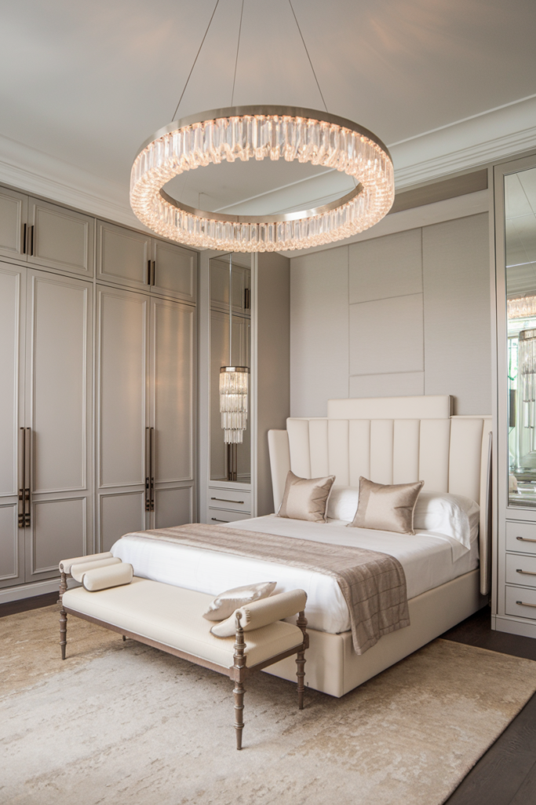
18. Go Big With a Statement Headboard
An oversized, upholstered or richly textured headboard anchors the entire room more decisively than almost any other single piece.
This is worth treating as the room's first real investment, everything else gets chosen in relation to it.
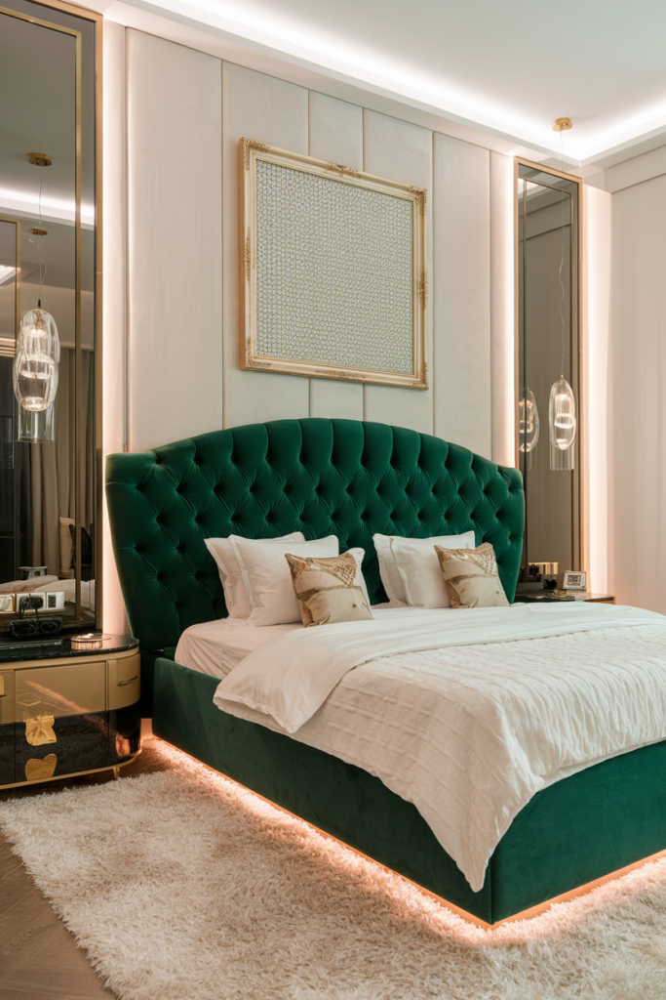
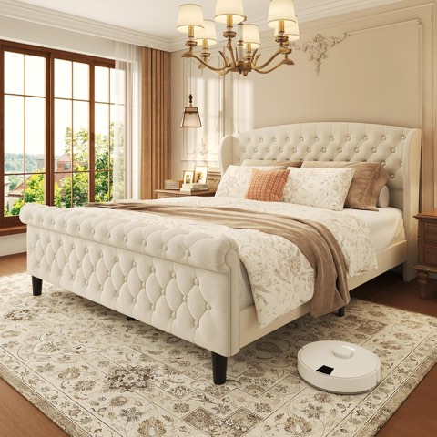
HISOFT Queen Velvet Upholstered Sleigh Bed Frame with Wingback Tufted Headboard
Shop on AmazonWrapping It Up
None of these 18 ideas actually require tackling the whole room at once.
Start with the headboard and bedding first, since both have the most direct daily impact, then layer in the smaller details gradually as budget allows.
A genuinely luxurious bedroom comes down to specific, deliberate choices made one at a time, not a vague sense of wanting some kind of upgrade.